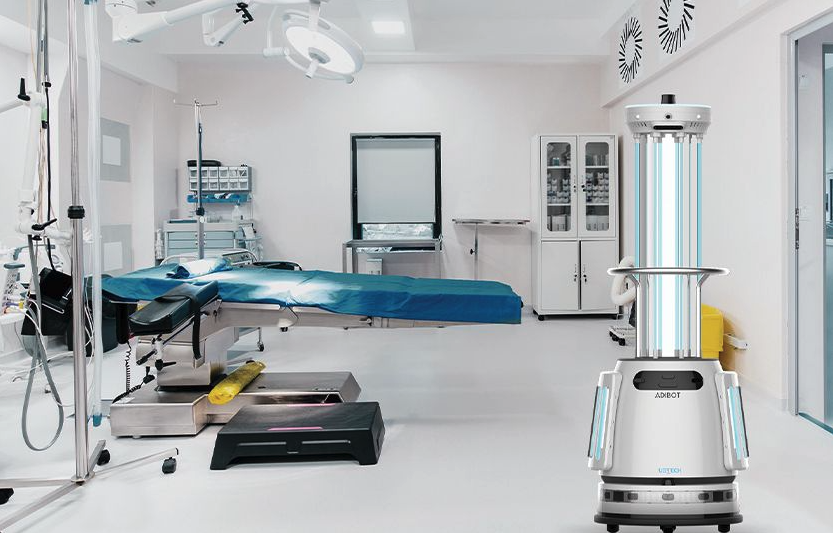

<?xml version="1.0" encoding="UTF-8"?><rss version="2.0"
	xmlns:content="http://purl.org/rss/1.0/modules/content/"
	xmlns:wfw="http://wellformedweb.org/CommentAPI/"
	xmlns:dc="http://purl.org/dc/elements/1.1/"
	xmlns:atom="http://www.w3.org/2005/Atom"
	xmlns:sy="http://purl.org/rss/1.0/modules/syndication/"
	xmlns:slash="http://purl.org/rss/1.0/modules/slash/"
	>

<channel>
	<title>UV_C Archives - UBTech English</title>
	<atom:link href="." rel="self" type="application/rss+xml" />
	<link>../</link>
	<description>Just another UBTech Robotics Sites site</description>
	<lastBuildDate>Thu, 01 Jul 2021 10:53:55 +0000</lastBuildDate>
	<language>en-US</language>
	<sy:updatePeriod>
	hourly	</sy:updatePeriod>
	<sy:updateFrequency>
	1	</sy:updateFrequency>
	<generator>https://wordpress.org/?v=6.2.5</generator>

<image>
	<url>../../../wp-content/uploads/sites/2/2021/03/cropped-favicon_2-1-32x32.png</url>
	<title>UV_C Archives - UBTech English</title>
	<link>../</link>
	<width>32</width>
	<height>32</height>
</image> 
	<item>
		<title>Why Choose UV-C for Disinfection?</title>
		<link>../../../2021/06/30/tai-sao-chon-uv-c-de-khu-trung-2/</link>
					<comments>../../../2021/06/30/tai-sao-chon-uv-c-de-khu-trung-2#respond</comments>
		
		<dc:creator><![CDATA[admin]]></dc:creator>
		<pubDate>Wed, 30 Jun 2021 10:31:31 +0000</pubDate>
				<category><![CDATA[Enterprise Robots]]></category>
		<category><![CDATA[UV_C]]></category>
		<guid isPermaLink="false">../../../..?p=9873</guid>

					<description><![CDATA[<p>During the 2021 Consumer Electronic Show (CES), UBTECH announced our debut of two UV-C powered robots, the ADIBOT disinfection robots, designed to help fight against the COVID-19 virus as well as other airborne pathogens and bacteria. What makes the ADIBOT system so unique is that here at UBTECH, we have continued our quest to create [&#8230;]</p>
<p>The post <a href="../../../2021/06/30/tai-sao-chon-uv-c-de-khu-trung-2">Why Choose UV-C for Disinfection?</a> appeared first on <a href="../../..">UBTech English</a>.</p>
]]></description>
										<content:encoded><![CDATA[<p></p>
<p>During the 2021 Consumer Electronic Show (CES), UBTECH announced our debut of two UV-C powered robots, the ADIBOT disinfection robots, designed to help fight against the COVID-19 virus as well as other airborne pathogens and bacteria. What makes the ADIBOT system so unique is that here at UBTECH, we have continued our quest to create robotics that improve people’s lives. By utilizing our vertical integrated manufacturing and expertise in robotics and AI software, we’ve also been able to create this robotic system in a cost-effective manner that brings potent, fast UV-C disinfection to businesses that may not have had the opportunity to explore this option before. Businesses and organizations like medical and dental offices, schools, gyms, and even transportation methods can now choose to provide fast and effective disinfection using cutting-edge UV-C technology.</p>
<p></p>
<p><strong>BUT WHY CHOOSE UV-C?</strong></p>
<p>UV-A and UV-B have been in the regular vernacular for several decades now as ultraviolet rays that expose humans to sun damage and splashed across sunscreen bottles and apparel everywhere. UV-C is higher energy wavelength and allows penetration at the cellular level, disabling the DNA and RNA of the virus, thus not permitting reproduction of the virus. UV-C was discovered to deactivate airborne and surface-based pathogens during the measles outbreak in 1933. UV irradiation began during that time to help disinfect hospitals and operating rooms. The practices of utilizing UV-C light for disinfection has since been used to help “reduce transmission of TB, pandemic influenza, and other major airborne infectious threats.[1]”</p>
<p>Fast forward almost 100 years, we are now in a global pandemic where businesses and students are indirectly affected because of the fast-spreading virus. Although modern medicine breakthroughs have yielded a vaccine and social distancing measures have been implemented globally, everyone still needs to be diligent. A November 2020 McKinsey study found that herd immunity is not likely to be reached until Q4 2021 or even Q1 2022 [2]. And that is only likely if all the steps to reach herd immunity goes smoothly.</p>
<p></p>
<p>Also in November 2020 studies found that 40% of Americans surveyed that were not confident in the vaccine and would not opt into receiving it [3]. That makes up 131 MILLION people in the U.S. alone. We created ADIBOT robots to be a helpful component to this continued disinfection effort. To keep businesses, patrons, and employees safe during and after COVID-19, the ADIBOT disinfection system is an excellent supplement to regular cleaning and disinfection.</p>
<p>To learn more about how ADIBOT can help your business or organization. Reach out to us here and we’ll be in contact shortly. ADIBOT robots start at $20,000 USD and financing options are available.</p>
<p>[1] https://www.ncbi.nlm.nih.gov/pmc/articles/PMC2789813/</p>
<p>[2] https://www.mckinsey.com/industries/healthcare-systems-and-services/our-insights/when-will-the-covid-19-pandemic-end#</p>
<p>[3] https://www.pewresearch.org/science/2020/12/03/intent-to-get-a-covid-19-vaccine-rises-to-60-as-confidence-in-research-and-development-process-increases/</p>
<p>The post <a href="../../../2021/06/30/tai-sao-chon-uv-c-de-khu-trung-2">Why Choose UV-C for Disinfection?</a> appeared first on <a href="../../..">UBTech English</a>.</p>
]]></content:encoded>
					
					<wfw:commentRss>../../../2021/06/30/tai-sao-chon-uv-c-de-khu-trung-2/feed/</wfw:commentRss>
			<slash:comments>0</slash:comments>
		
		
			</item>
	</channel>
</rss>
